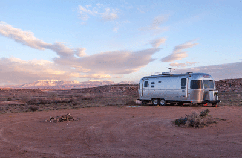

Page 2 - Equipment List
Tent Camping Equipment List

Shelter and Sleeping Needs
- Tent with rain fly
- Sleeping bag
- Pillow
- Fleece sleeping bag liner
- Blankets
- Sleeping mat or cot
- Table & chairs
- Spare batteries & Chargers
- Flashlight, headlamp, or lantern
- Canopy tent
- Tarp & rope
- Gas Firepit & Propane
Food Preparation and Eating
- Stove or Grill
- Fuel, (gas, propane, etc.)
- Matches and lighter
- Ice cooler
- Pots, pans, and tea kettle
- Chopping board
- Plates, bowls, and mugs
- Cooking and eating utensils
- Dish cloths, and dish towels
- Wash basin and dish soap
- Trash bags
- Food
- Portable water jugs (lots!)
Clothing
- Normal everyday clothing, but keep in mind that lightweight and quick drying
materials like nylon will help you stay warmer, drier, and more comfortable in the
cold. Cotton and denim take a long time to dray after getting wet.
- Rain jacket or poncho
- Clean and dry clothing to sleep in.
- Proper shoes that will keep you warm, dry, and protected.
- Wool hat, gloves, coat, multiple layers for warmth.
- Spare underwear and socks.
- Sun hat, sun block, after sun, and sunglasses.
Toiletries
- Your personal toiletries
- Medications
- First aid kit
- Hand sanitizer and hand soap
- Toothbrush and toothpaste
- Towels
- Insect repellent
Toilet Tent Setup
- Toilet tent
- 10-gallon bucket with fitted toilet seat
- Toilet Paper
- Biodegradable toilet bags
- Shovel
Boondock Travel Trailer Equipment List

- Camper trailer
- All the supplies needed for the trailer
- 3-4 trailer batteries
- Solar panels or generators
- Portable water jugs (lots!)
- Outdoor stove or grill
- Outdoor canopy
- Outdoor table and chairs
- Outdoor lantern
Optional
- Toilet tent
- 10-gallon bucket with fitted toilet seat
- Toilet Paper
- Biodegradable toilet bags
- Shovel